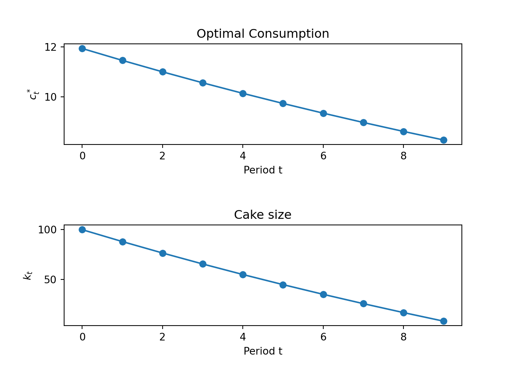
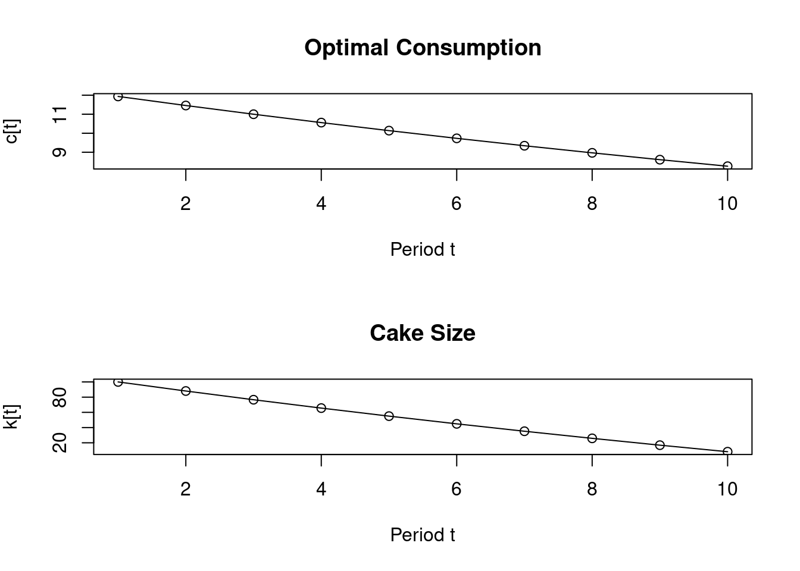
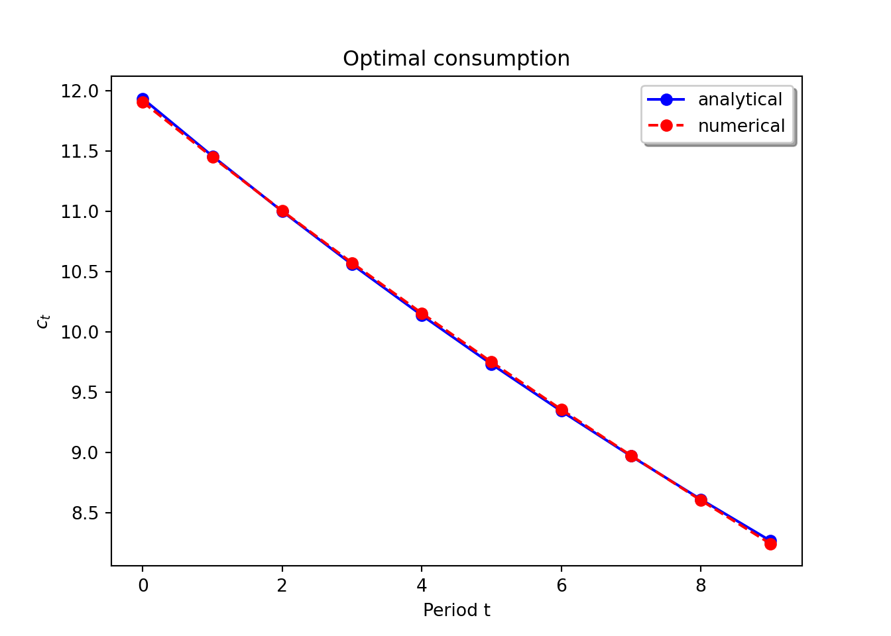
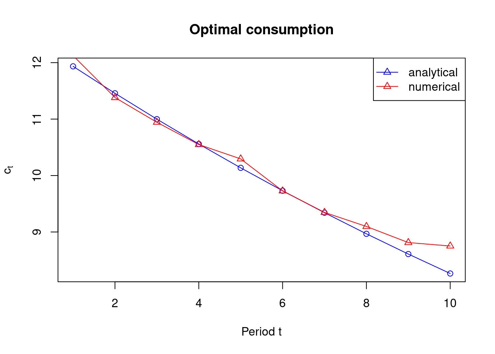

import numpy as np
import matplotlib.pyplot as plt
import math as m
from scipy import stats as st
from scipy import optimize
import time # Imports system time module to time your script
plt.close('all') # close all open figures21 Constrained Optimization
21.1 The Cake Eating Problem
Once upon a time there was a little girl who got a cake. The girl decided to eat the cake all alone. But she was not sure when she wanted to eat the cake. First, she thought of eating the whole cake right away. But then, nothing would be left for tomorrow and the day after tomorrow.
Well, on the one hand, eating cake today is better than eating it tomorrow. But then, eating too much at the same time might not be the best either. She imagined that the first mouthful of cake is a real treat, the second is great, the third is also nice. But the more you eat, the less you enjoy it.
So, she decided to eat only a bit of the cake everyday. Then, she could eat everyday another first mouthful of cake. The girl knew that the cake would be spoiled if she kept it more than nine days. Therefore, she would eat the cake in the first ten days. Yet, how much should she eat everyday?
21.2 Solution
- She thought of eating everyday a piece of the same size.
- But if eating cake today is better than waiting for tomorrow, how can it possibly be the best to do the same today as tomorrow?
- If I ate just a little bit less tomorrow and a little bit more today I would be better off, she concluded.
- And she would eat everyday a bit less than the previous day and the cake would last ten days long and nothing would be left in the end
21.3 Formally
- Assume preferences in every period \(t\) follow: \(u(c_t) = ln(c_t)\)
- \(c_t\) is the amount of cake consumed in period \(t\)
- Future consumption is discounted with the time-preference factor \(\beta< 1\).
- The present value in period 0 of the whole consumption path is:
\[V(c_0, c_1 ,c_2 ,...,c_T ) = \sum_{t=0}^{T} \beta^{t} U(c_t)\]
- The person tries to maximize this by choosing her consumption in every period \(t=0,..,T\)
- The cake size in the next period \(t+1\) is the size today less the consumption today
\[k_{t+1} = k_{t} - c_{t}\]
- Therefore, the cake size must be non-negative in any period, so that
\[k_t \ge 0\]
The maximization problem can be written as
\[\max_{c_0,c_1,...,c_T} \sum_{t=0}^{T} \beta^{t} U(c_t)\]\[s.t.\]\[c_0 + c_1 + ... + c_T = k_0\]
It is a constrained maximization problem with one constraint.
21.4 Analytical Solution
- We can express consumption in period \(t\) from the budget constraint as
\[c_t = k_t - k_{t+1}\]
and similarly we can express consumption in other periods, say \(t-1\), \(t\), or \(t+1\) as
\[c_{t-1} = k_{t-1} - k_{t}\]\[c_{t} = k_{t} - k_{t+1}\]\[c_{t+1} = k_{t+1} - k_{t+2}\]
- Substituting these consumption expressions into the life-time consumption path we get:
\[U(k_{0} - k_{1})+ \beta U(k_{1} - k_{2})+...+ \beta^{t-1} U(k_{t-1} - k_{t}) + \beta^{t} U(k_{t} - k_{t+1}) + \beta^{t+1} U(k_{t+1} - k_{t+2}) ...\]
-
Deriving this objective function w.r.t. \(k_t\) and setting is equal to zero as it is a first order condition we get:
\[\beta^{t-1} U'(k_{t-1} - k_{t})\times (-1) + \beta^{t} U'(k_{t} - k_{t+1}) = 0.\]
This can be rearranged to
\[U'(k_{t-1} - k_{t}) = \frac{\beta^{t}}{\beta^{t-1}} U'(k_{t} - k_{t+1})\]
or with the budget constraints plugged back in
\[U'(c_{t-1}) = \beta U'(c_{t})\]
- This is the so called Euler Equation. It relates the marginal utility of consumption today to the marginal utility of consumption tomorrow. It is an inter-temporal optimality condition.
- The Euler equation links two periods together. For the solution (the consumption path we are looking for) to be an optimum, this equation has to hold in every period.
\[U'(c_{t}) = \beta U'(c_{t+1})\]
Important
The Euler Equation has an intuitive interpretation:
- At a utility maximum, the consumer cannot gain from feasible shifts of consumption between periods
- A one-unit reduction in period \(t\) consumption lowers \(U_t\) by \(U'_t\)
- This unit saved can be shifted to period \(t+1\) where it raises utility by \(U'_{t+1}\) which needs to be discounted back one period so the marginal utility values become comparable \(t\), that is: \(\beta \times U'_{t+1}\)
- In the optimum these two quantities must be equal!
21.5 Solving the Problem
-
Plugging the functional form for the utility function into the Euler equation we get:
\[\frac{1}{c_{t}} = \frac{\beta}{c_{t+1}}\]
or
\[c_{t+1} = \beta c_{t}\]
or reformulated again and expressed as \(c_{t}\)
\[c_{t} = \frac{1}{\beta}\times c_{t+1}\]
In the optimum we know that: \(k_{T+1} = 0\). After the last period \(T\) we won't have any leftover cake. It would not be optimal to have leftover cake.
Recursively plugging the budget constraint into the Euler equation we get:
\[\boxed{c_0=\frac{1-\beta}{(1-\beta)^{T+1}}k_0}\]
- We can now map out the optimal consumption for any size cake: \(k_0\)
Note
The solution above (in the box) was found by solving the problem backwards, starting in the last period \(T\):
\(c_T = k_T\) in the last period, eat rest of cake you still have and do not leave anything for period \(T+1\)
-
\(c_{T-1}\) we get by:
-
Substituting the solution we got above into the Euler equation that connects period \(T-1\) to the last period \(T\) we have:
\[c_{T-1}=\frac{1}{\beta} c_T=\frac{1}{\beta} k_T\]
We now have an expression for \(c_{T-1}\) as a funciton of cake in the last period \(k_T\). However, we need an expression that tells us how much to consume in period \(T-1\) as a function of the amount of cake in \(T-1\) that is \(k_{T-1}\)
-
We use the the budget constraint in period \(T-1\)
\[c_{T-1} = k_{T-1} - k_{T}\]
solve it for \(k_T\) and replace \(k_T\) in the Euler equation above so that we get
\[c_{T-1}=\frac{1}{\beta} (k_{T-1} - c_{T-1})\]
-
Which can be solved for \(c_{T-1}\) which is
\[c_{T-1}=\frac{1}{1+\beta} k_{T-1}\]
This is now an expression of optimal consumption in \(T-1\) as a function of the amount of cake in the same period, that is \(k_{T-1}\)
-
-
We next solve for: \(c_{T-2}=\frac{1}{\beta} c_{T-1}\), which after substituting for \(c_{T-1}=\frac{1}{1+\beta} k_{T-1}\) we get
\(c_{T-2}=\frac{1}{\beta +\beta^{2}} k_{T-1}\). We again substitute the budget constraint \(k_{T-1} = k_{T-2} - c_{T-2}\) and get \(c_{T-2}=\frac{1}{\beta +\beta^{2}} (k_{T-2} - c_{T-2})\) which we can solve for \(c_{T-2}\) which becomes: \(c_{T-2}=\frac{1}{1 + \beta +\beta^{2}} k_{T-2}\)
Continue with this and find: \(c_{T-T} = \frac{1}{1+\beta + \beta^2 +...+\beta^T} k_{T-T}\)
Using the summation formulat for a finite series \(\sum_{t=0}^{T}\beta^t = \frac{1-\beta^{T+1}}{1-\beta}\), we get
\(\boxed{c_0=\frac{1-\beta}{(1-\beta)^{T+1}}k_0}\)
-
Once we have this, we can solve the problem for any amount of starting cake \(k_0\). Using the optimal consumption in the first period \(c_0\) we can immediately use the Euler equation to solve for next period's optimal consumption
\[c_1 = \beta \times c_0\]
etc.
21.6 Plotting the Solution
- For any size \(k+0\) and time horizon \(T\) we can now calculate the optimal consumption in each period
- Example: \(k_0 = 100\), \(T=10\), and \(\beta = 0.96\)
We next calculate the solutions following the analytical procedure introduced above and plot the optimal consumption path over time.
Note
Since we defined the problem above as t=0,t=1,...,t=T-1, t=T. A 10 period problem goes from t=0, t=1, ..., t=9 so that T=9.
T = 9
beta = 0.96
kv = np.zeros(T+1,float)
cv = np.zeros(T+1,float)
uv = np.zeros(T+1,float)
kv[0] = 100 # k0
cv[0] = (1.0-beta)/(1.0-beta**(T+1)) * kv[0] # c0
uv[0] = np.log(cv[0])
for i in range(1,T+1):
#print "i=" + str(i)
cv[i] = beta * cv[i-1]
kv[i] = kv[i-1] - cv[i-1]
# Period utility with discounting
uv[i] = beta**i *np.log(cv[i])
np.sum(uv) # total utility
coptv = cv
koptv = kv
print("coptv = " + str(coptv))
print("koptv = " + str(koptv))19.351141994352123
coptv = [11.93433618 11.45696274 10.99868423 10.55873686 10.13638738 9.73093189
9.34169461 8.96802683 8.60930576 8.26493353]
koptv = [100. 88.06566382 76.60870108 65.61001685 55.05127999
44.91489261 35.18396072 25.84226611 16.87423928 8.26493353]T <- 9
beta <- 0.96
kv <- numeric(T + 1)
cv <- numeric(T + 1)
uv <- numeric(T + 1)
kv[1] <- 100 # k0
cv[1] <- (1 - beta) / (1 - beta^(T + 1)) * kv[1] # c0
uv[1] <- log(cv[1])
for (i in 2:(T + 1)) {
cv[i] <- beta * cv[i - 1]
kv[i] <- kv[i - 1] - cv[i - 1]
# Period utility with discounting
uv[i] <- beta^(i - 1) * log(cv[i])
}
total_utility <- sum(uv) # total utility
coptv <- cv
koptv <- kv
cat("coptv = ", coptv, "\n")
cat("koptv = ", koptv, "\n")
cat("Total Utility = ", total_utility, "\n")coptv = 11.93434 11.45696 10.99868 10.55874 10.13639 9.730932 9.341695 8.968027 8.609306 8.264934
koptv = 100 88.06566 76.6087 65.61002 55.05128 44.91489 35.18396 25.84227 16.87424 8.264934
Total Utility = 19.35114 Plotting the function is achieved via:
fig, ax = plt.subplots(2,1)
plt.subplots_adjust(wspace=0.4, hspace=0.8)
#
ax[0].plot(coptv, '-o')
ax[0].set_ylabel(r'$c^*_t$')
ax[0].set_xlabel('Period t')
ax[0].set_title('Optimal Consumption')
#
ax[1].plot(koptv, '-o')
ax[1].set_ylabel(r'$k_t$')
ax[1].set_xlabel('Period t')
ax[1].set_title('Cake size')
#
plt.show()
# Create a 2x1 subplot
par(mfrow = c(2, 1))
# Plot optimal consumption
plot(coptv, type = 'o', ylab = expression('c[t]'), xlab = 'Period t', main = 'Optimal Consumption')
# Plot cake size
plot(koptv, type = 'o', ylab = expression('k[t]'), xlab = 'Period t', main = 'Cake Size')
21.7 Numerical Solution in Python
- For a numerical solution we use the
optimizepackage - The routine
fmin_slsqpminimizes constrained non-linear functions. More specifically it minimizes a function using Sequential Least SQuares Programming hence the name_slsqp.
Important
- I recommend getting into the habit of reading the documentation for functions of libraries so that you learn how to use them correctly as well as the different ways of their application.
- Here is the link: Scipy Documentation for fmin_slsqp
- The constraints can be equality or inequality constraints
- Our problem has one equality constraint:
- We start by defining the functions that we would like to optimize, which is basically present value welfare, or the present value of all future utilities added up. We define this welfare stream from consumption as
f_welf.
\[\sum_{t=0}^{T}\beta^{t} U(c_t)\]
def f_welf(cv):
T = len(cv)
uv= np.zeros(T,float)
for i in range(T):
beta = 0.96
# Period utility with discounting
uv[i] = (beta**i) * np.log(cv[i])
# We want to maximize this welfare,
# so we need to 'negate' the result
return (-np.sum(uv))
Important
We want to maximize welfare. Since the routine we will be calling is a minimization routine, we need to define the negative welfare function. Minimizing this negative function, will maximize welfare.
The constraint needs to be defined as function as well. We therefore define the constraint as f_const1. This basically states that you cannot eat more than the cake itself.
\[c_0+c_1+...+c_T=k_0\]
Caution
Note that the constraint function has the same input argument (i.e., the vector of consumptions for each period) as the welfare function that we want to maximize.
We finally call the optimizer routine fmin_slsqp handing in the function we want to maximize f_welf, the starting values (guesses) for consumption in each period c0v and the constraints function f_constr1.
T = 10
# Starting guesses for the optimal consumption vector
c0v = np.ones(T,float)*0.1
copt_numv = optimize.fmin_slsqp(f_welf, c0v, f_eqcons = f_constr1)Optimization terminated successfully (Exit mode 0)
Current function value: -19.351131201280168
Iterations: 6
Function evaluations: 66
Gradient evaluations: 6print(copt_numv)[11.90586733 11.44702338 11.00252664 10.57170585 10.15394251 9.74861554
9.35514463 8.97302557 8.60163014 8.2405184 ]# Load the `nloptr` package for optimization
library(nloptr)
T <- 10
# Starting guesses for the optimal consumption vector
c0v <- rep(4.0, T)
# Set optimization options.
local_opts <- list("algorithm" = "NLOPT_LN_COBYLA",
"xtol_rel"=1.0e-6)
# Add top options
opts <- list("algorithm" = "NLOPT_LN_AUGLAG",
"xtol_rel" = 1.0e-6, "local_opts" = local_opts, "maxeval" = 200)
# Optimize with default settings
opt_res <- nloptr(x0 = c0v, eval_f = f_welf, eval_g_eq = f_constr1, opts = opts)
copt_numv <- opt_res$solution
cat(copt_numv)12.12393 11.38157 10.94359 10.54904 10.29503 9.727623 9.34719 9.09815 8.813078 8.752326And finally we plot the optimal consumption path coptv that we just solved for.
fig, ax = plt.subplots()
# Plot analytical solution
ax.plot(np.arange(0,T), coptv, 'b-o')
# Plot numerical solution
ax.plot(np.arange(0,T), copt_numv, 'r--o')
ax.set_title("Optimal consumption")
ax.set_xlabel("Period t")
ax.set_ylabel(r"$c_t$")
# Create a legend
ax.legend(['analytical', 'numerical'], loc='best', shadow=True)
# Create a sequence for the x-axis (periods)
t <- 1:T
# Plot the analytical solution
plot(t, coptv, type = "o", col = "blue", xlab = "Period t", ylab = expression("c"[t]),
main = "Optimal consumption")
# Add the numerical solution to the plot
lines(t, copt_numv, type = "o", col = "red", pch = 2)
# Add a legend
legend("topright", legend = c("analytical", "numerical"), col = c("blue", "red"), lty = 1, pch = 2)
We can also print the results to see it more clearly.
np.set_printoptions(formatter={'float': lambda x: "{0:0.4f}".format(x)})
print('-----------------------------')
print('Analytic solution')
print('-----------------------------')
print('coptv = {}'.format(coptv))
print(' ')
print('-----------------------------')
print('Numeric solution')
print('-----------------------------')
print('copt_numv = {}'.format(copt_numv))
print('-----------------------------')-----------------------------
Analytic solution
-----------------------------
coptv = [11.9343 11.4570 10.9987 10.5587 10.1364 9.7309 9.3417 8.9680 8.6093
8.2649]
-----------------------------
Numeric solution
-----------------------------
copt_numv = [11.9059 11.4470 11.0025 10.5717 10.1539 9.7486 9.3551 8.9730 8.6016
8.2405]
-----------------------------options(digits = 4) # Set the number of digits to display
cat("-----------------------------\n")
cat("Analytic solution\n")
cat("-----------------------------\n")
cat("coptv = ", coptv, "\n\n")
cat("-----------------------------\n")
cat("Numeric solution\n")
cat("-----------------------------\n")
cat("copt_numv = ", copt_numv, "\n")
cat("-----------------------------\n")-----------------------------
Analytic solution
-----------------------------
coptv = 11.93 11.46 11 10.56 10.14 9.731 9.342 8.968 8.609 8.265
-----------------------------
Numeric solution
-----------------------------
copt_numv = 12.12 11.38 10.94 10.55 10.3 9.728 9.347 9.098 8.813 8.752
-----------------------------We can now see that the numerical solution is very close to the analytical solution we derived 'by hand' above. The optimal consumption path is decreasing. You start out eating a lot of cake and then gradually decrease your consumption. Still, you want to eat a bit of cake every period.
Let us see whether we can increase the accuracy of the solution by allowing for more iterations and choosing a smaller optimization tolerance criteria.
T = 10
# Starting guesses for the optimal consumption vector
c0v = np.ones(T,float)*0.1
copt_num2v = optimize.fmin_slsqp(f_welf, c0v, f_eqcons = f_constr1, \
iter=200, acc=1e-08)
print('--------------------------------------------------------')
print('Analytic solution: Default iterations and tolerance')
print('--------------------------------------------------------')
print('coptv = {}'.format(coptv))
print(' ')
print('--------------------------------------------------------')
print('Numeric solution I:')
print('copt_numv = {}'.format(copt_numv))
print(' ')
print('--------------------------------------------------------')
print('Numeric solution II: More iterations and smaller tolerance')
print('--------------------------------------------------------')
print('copt_num2v = {}'.format(copt_num2v))
print('--------------------------------------------------------')Optimization terminated successfully (Exit mode 0)
Current function value: -19.351141900757867
Iterations: 14
Function evaluations: 154
Gradient evaluations: 14
--------------------------------------------------------
Analytic solution: Default iterations and tolerance
--------------------------------------------------------
coptv = [11.9343 11.4570 10.9987 10.5587 10.1364 9.7309 9.3417 8.9680 8.6093
8.2649]
--------------------------------------------------------
Numeric solution I:
copt_numv = [11.9059 11.4470 11.0025 10.5717 10.1539 9.7486 9.3551 8.9730 8.6016
8.2405]
--------------------------------------------------------
Numeric solution II: More iterations and smaller tolerance
--------------------------------------------------------
copt_num2v = [11.9320 11.4575 11.0004 10.5604 10.1372 9.7305 9.3403 8.9663 8.6085
8.2669]
--------------------------------------------------------# Load the `nloptr` package for optimization
library(nloptr)
T <- 10
# Starting guesses for the optimal consumption vector
c0v <- rep(4.0, T)
local_opts <- list("algorithm" = "NLOPT_LN_COBYLA",
"xtol_rel"=1.0e-8)
# Set optimization options.
opts <- list("algorithm" = "NLOPT_LN_AUGLAG",
"xtol_rel" = 1.0e-8, "local_opts" = local_opts, "maxeval" = 400)
# Optimize with default settings
opt_res <- nloptr(x0 = c0v, eval_f = f_welf, eval_g_eq = f_constr1, opts = opts)
copt_num2v <- opt_res$solution
# Display results
cat('--------------------------------------------------------\n')
cat('Analytic solution: \n')
cat('--------------------------------------------------------\n')
cat('coptv = ', coptv, '\n')
cat('--------------------------------------------------------\n')
cat('Numeric solution I:\n')
cat('copt_numv = ', copt_numv, '\n')
cat('--------------------------------------------------------\n')
cat('Analytic solution: More iterations and smaller tolerance\n')
cat('--------------------------------------------------------\n')
cat('copt_num2v = ', copt_num2v, '\n')
cat('--------------------------------------------------------\n')--------------------------------------------------------
Analytic solution:
--------------------------------------------------------
coptv = 11.93 11.46 11 10.56 10.14 9.731 9.342 8.968 8.609 8.265
--------------------------------------------------------
Numeric solution I:
copt_numv = 12.12 11.38 10.94 10.55 10.3 9.728 9.347 9.098 8.813 8.752
--------------------------------------------------------
Analytic solution: More iterations and smaller tolerance
--------------------------------------------------------
copt_num2v = 11.94 11.47 11.01 10.57 10.13 9.729 9.362 8.967 8.596 8.305
--------------------------------------------------------We can see that our numerical solution is now more accurate and much closer to the analytic solution.
Important
There is a trade off between accuracy and computational time. Here it is not an issue, but in bigger (large scale) optimization problems, computation time is often a factor.
Key Concepts and Summary
- Cake eating dynamic problem
Self-check questions
- Change the number of periods in the model and plot the optimal path of cake consumption